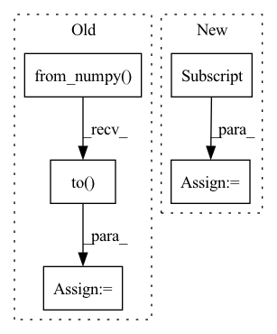

Pattern ID :2242

Before Change
// Self-attention
causality_mask = np.tril(np.ones((1, 1, seq_len, seq_len), dtype=np.int))
attn_mask = torch.from_numpy(causality_mask).to(self.device)
// attn_mask = valid_his.view(batch_size, 1, 1, seq_len)
for block in self.transformer_block:
seq = block(seq, attn_mask)
seq = seq * valid_mask[:, :, None].float()
his_vector = (seq * (position == 1).float()[:, :, None]).sum(1)
return his_vector
After Change
seq = block(seq, attn_mask)
seq = seq * valid_mask[:, :, None].float()
his_vector = seq[torch.arange(batch_size), lengths - 1]
return his_vector
In pattern: SUPERPATTERN
Frequency: 3
Non-data size: 5
Instances
Fragment ID: 14277626
Project Name: thuwangcy/rechorus
Commit Name: 03e00482d35ef5c38ecdfba21aa5cd1802873944
Time: 2020-12-12
Author: THUwangcy@gmail.com
File Name: src/models/sequential/ContrastRec.py
M Class Name: SASRecEncoder
N Class Name: BERT4RecEncoder
M Method Name: forward(3)
N Method Name: forward(3)
M Parent Class: nn.Module
N Parent Class: nn.Module
M File Name: src/models/sequential/ContrastRec.py
N File Name: src/models/sequential/ContrastRec.py
M Start Line: 267
M End Line: 284
N Start Line: 270
N End Line: 285
'>
Before Change
// Self-attention
causality_mask = np.tril(np.ones((1, 1, seq_len, seq_len), dtype=np.int))
attn_mask = torch.from_numpy(causality_mask).to(self.device)
// attn_mask = valid_his.view(batch_size, 1, 1, seq_len)
for block in self.transformer_block:
seq = block(seq, attn_mask)
seq = seq * valid_mask[:, :, None].float()
his_vector = (seq * (position == 1).float()[:, :, None]).sum(1)
return his_vector
After Change
seq = block(seq, attn_mask)
seq = seq * valid_mask[:, :, None].float()
his_vector = seq[torch.arange(batch_size), lengths - 1]
return his_vector
'>
Fragment ID: 14277628
Project Name: thuwangcy/rechorus
Commit Name: 7b8b88b828f814cb8da18e1305837d1bce99306c
Time: 2021-04-14
Author: THUwangcy@gmail.com
File Name: src/models/developing/ContraRecBeta.py
M Class Name: SASRecEncoder
N Class Name: BERT4RecEncoder
M Method Name: forward(3)
N Method Name: forward(3)
M Parent Class: nn.Module
N Parent Class: nn.Module
M File Name: src/models/developing/ContraRecBeta.py
N File Name: src/models/developing/ContraRecBeta.py
M Start Line: 280
M End Line: 297
N Start Line: 135
N End Line: 150
'>
Before Change
priv_obses = self.lut_range_idx_2_priv_o[range_idxs]
if isinstance(pub_obses, list):
pub_obses = torch.from_numpy(np.array(pub_obses)).to(self.device, torch.float32)
if self.args.use_pre_layers:
_board_obs = pub_obses[:, self.board_start:self.board_stop]
_hist_and_state_obs = torch.cat([
After Change
priv_obses = self.lut_range_idx_2_priv_o[range_idxs]
pf_mask = torch.where(pub_obses[:,14] == 1)
priv_obses[pf_mask] = self.lut_range_idx_2_priv_o_pf[range_idxs][pf_mask]
if self.args.use_pre_layers:
_board_obs = pub_obses[:, self.board_start:self.board_stop]
_hist_and_state_obs = torch.cat([
'>
Fragment ID: 14277630
Project Name: diditforlulz273/pokerrl-omaha
Commit Name: 9ca236e71032b9d5819e51bda3606b12d9c161bc
Time: 2020-06-05
Author: diditforlulz@gmail.com
File Name: PokerRL/rl/neural/MainPokerModuleFLAT.py
M Class Name: MainPokerModuleFLAT
N Class Name: MainPokerModuleFLAT
M Method Name: forward(3)
N Method Name: forward(3)
M Parent Class: nn.Module
N Parent Class: nn.Module
M File Name: PokerRL/rl/neural/MainPokerModuleFLAT.py
N File Name: PokerRL/rl/neural/MainPokerModuleFLAT.py
M Start Line: 93
M End Line: 96
N Start Line: 96
N End Line: 98